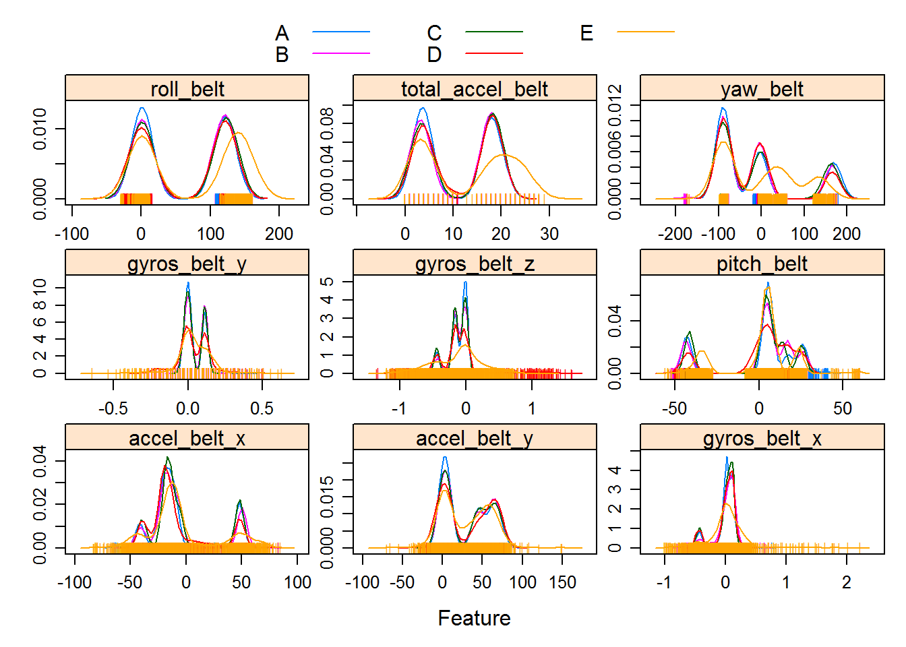
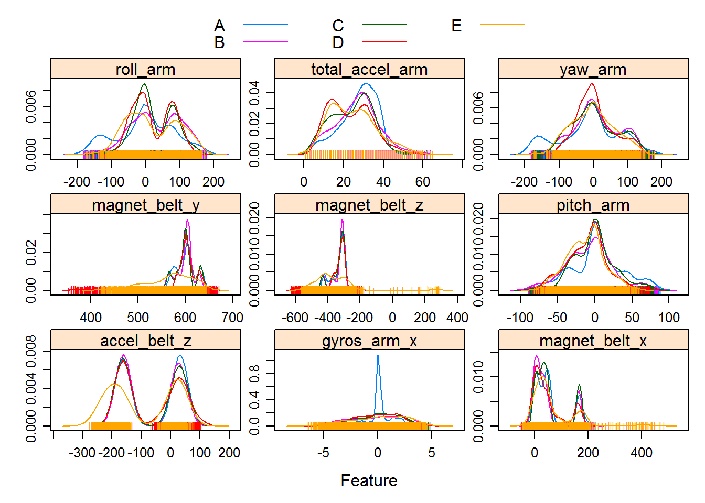
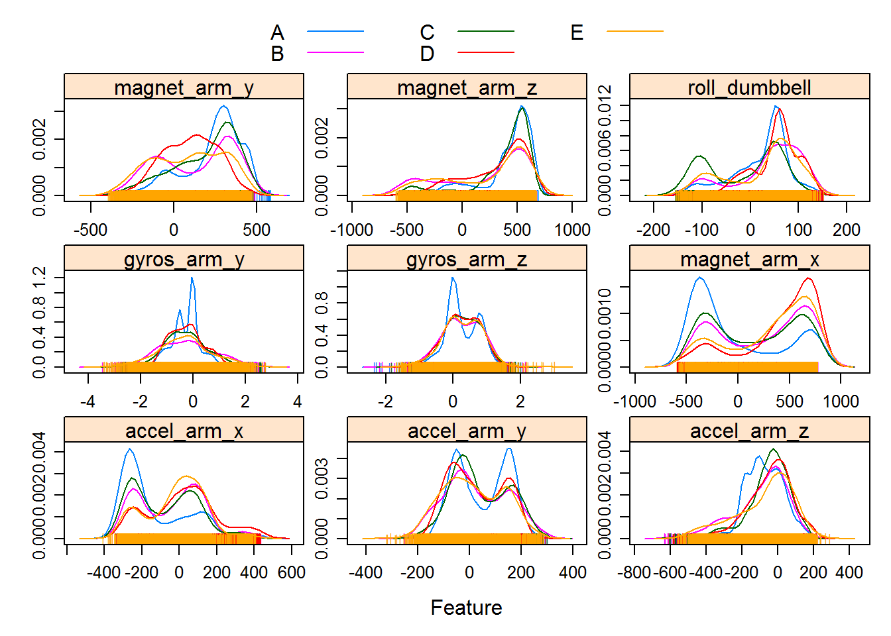
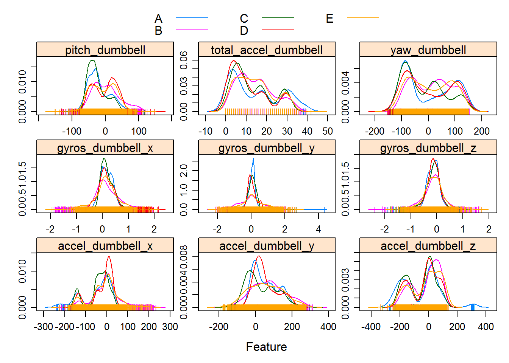
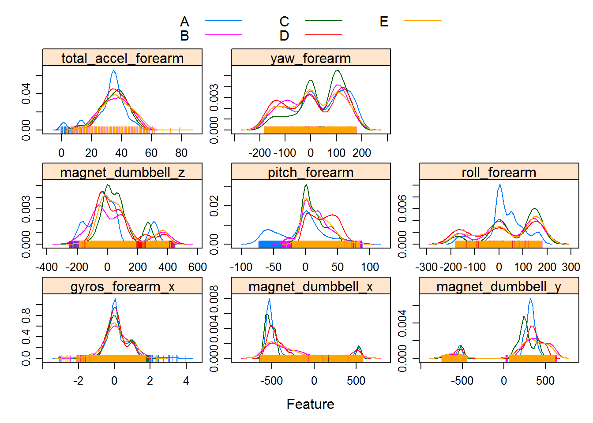
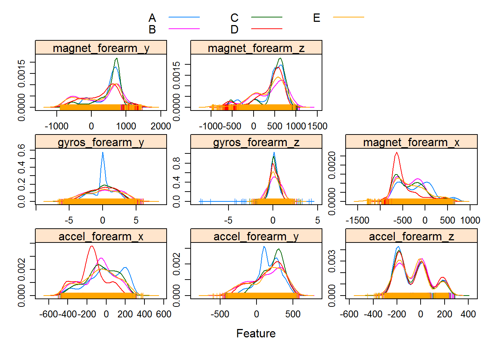

This report describes the the creation of a prediction model to determe if a person is performing barbell lifting exercises correctly or not. Participants performed the exercise in 5 different manners (each a “classe”) while wearing a personal fitness device that measured the accelerometer readings while performig the exercise. A description of the study can be found here: http://groupware.les.inf.puc-rio.br/har (see the section on the Weight Lifting Exercise Dataset) and the data used to build the model can be found here: https://d396qusza40orc.cloudfront.net/predmachlearn/pml-training.csv.
The model will attempt to predict the classe of the exercise performed based on the other data collected. The model will be built on a subset of the data collected (the training set) and then the prediction will be applied to the remaining data (the testing set) to asssess out of sample error rate. Finally we will attempt to predict the classe for a set of 20 observations where the true classe is not given to us.
First we must read in the data and remove any predictors that are not helpful for predicting the classes in the final data set.
Then we split the training data were split into training set and a testing set The training set will be used to build the model. The testing set will be used to estimate the model’s out of sample error
##split data into training and testing
set.seed(96492)
inTrain <- createDataPartition(y=data_sub$classe,
p=0.7, list=FALSE)
training <- data_sub[inTrain,]
testing <- data_sub[-inTrain,]Below are the density plots for each of the possible predictors. The multi-modal densities indicate possible interaction between the predictors. 
Since this is a classification problem, some of the common models used would be linear discriminant analysis and decision trees. We fit three different models (lda, decision tree, and bootstrap aggregated decision tree) to compare their accuracy. For all the models we use perform 1 cross validations, with 10 folds.
##do cross validation, 3 folds 1 time
fitControl <- trainControl(method = "repeatedcv",number = 10,repeats = 1)
##linear discriminant analysis
train.lda <- train(classe ~ ., data=training, method="lda", trControl = fitControl)
## random tree
train.rpart<- train(classe ~ ., data=training, method="rpart", trControl = fitControl)
## bagged tree
train.treebag <- train(classe ~ ., data=training, method="treebag", trControl = fitControl)The accuracy estimate from the cross validation indicates that the bagged tree model works quite well.
| method | Accuracy |
|---|---|
| lda | 0.733 |
| rpart | 0.561 |
| treebag | 0.987 |
Now we will apply our bagged tree model to the known values we held out to get an estimate of out of sample error which we see is about 99%.
pred1 <- predict(train.treebag, testing)
cm <- confusionMatrix(pred1, testing$classe)
kable(data.frame(Value=cm$overall[1:4]), digits=4, align="l")| Value | |
|---|---|
| Accuracy | 0.9891 |
| Kappa | 0.9862 |
| AccuracyLower | 0.9861 |
| AccuracyUpper | 0.9916 |
Finally we’ll predict the classes for the new 20 observations
final_pred <- predict(train.treebag, final_testing)
print(final_pred)## [1] B A B A A E D B A A B C B A E E A B B B
## Levels: A B C D E